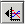
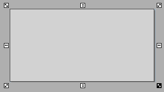
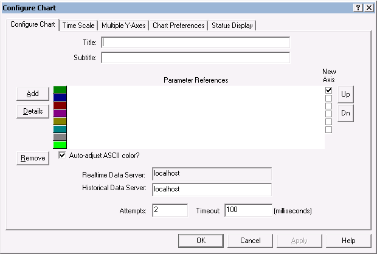
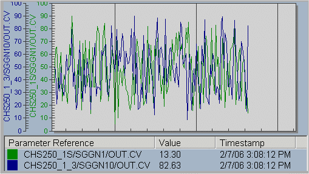
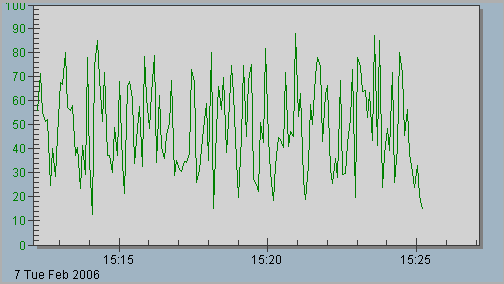
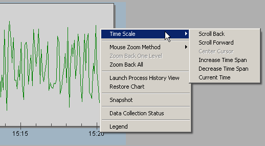

The Embedded Trend object
The Embedded Trend object is an ActiveX control used to display a trend chart of historical and real-time data in DeltaV Operate. The number of Embedded Trend charts that can be active at the same time in the DeltaV Operate run-time environment is limited only by how many will fit on the picture. Up to 20 embedded trend control objects can be added to a display without negatively impacting performance.
The Embedded Trend object uses the existing Real-time Server to collect real-time data and a selected historical data server for the historical data. The Embedded Trend can communicate with the DeltaV Continuous Historian, the Advanced Continuous Historian, or a PI Server enterprise historian.
To configure an Embedded Trend object that retrieves historical data from the Advanced Continuous Historian or a PI Server enterprise historian, you must install PI Asset Framework (AF) Client software on each DeltaV workstation where an Embedded Trend object is configured. For more information, refer to Install PI AF Client support for embedded trend objects in DeltaV Operate.
In configuration mode, an Embedded Trend object can be inserted into a
picture by clicking the Embedded Trend button


Configuring an Embedded Trend
Double-clicking the Embedded Trend object (or right-clicking and selecting Properties from the context menu) opens a 5-page dialog box where you can specify the desired parameter references for trending, the name of the historical data server, the time scale, multiple Y axes, status display pen colors, and chart preferences. If the historian is running on a remote computer—for example, in a DeltaV Zones environment or on a non-DeltaV workstation—you can enter the node name in the Historical Data Server field explicitly. Other chart preferences include whether or not to show the Legend in DeltaV Operate run mode, the chart colors and font information, number of decimals to display, and whether or not to show grid lines and axis labels. The first page of the Configure Chart dialog is shown below. Refer to the online help for detailed information on the dialog tabs.

Embedded Trend Controls can be configured using VBA script to give the operator the ability to add or remove pens at run time. This is done using the AddTags, RemoveAllTags and RefreshChart methods. Refer to Configuring Embedded Trend Controls for adding or removing pens at run time
For information on configuring embedded trends in a DeltaV Zones environment refer to Process History View: viewing historical and real-time parameter data in a DeltaV Zones environment.
Resizing an Embedded Trend Chart
An Embedded Trend graph can be resized in configuration mode by selecting the graph and dragging the "handles" at the corners or sides of the graph. If the chart is not manually resized, the section of the chart reserved for the parameter trend lines is limited by whether or not the legend is included and by how many Y-axis labels are included. Compare the two charts below. One has a legend with two parameter references and two Y-axis labels; the other is a simple graph showing a single trend line with the X and Y scales marked.


Working with Embedded Trends at Run Time
